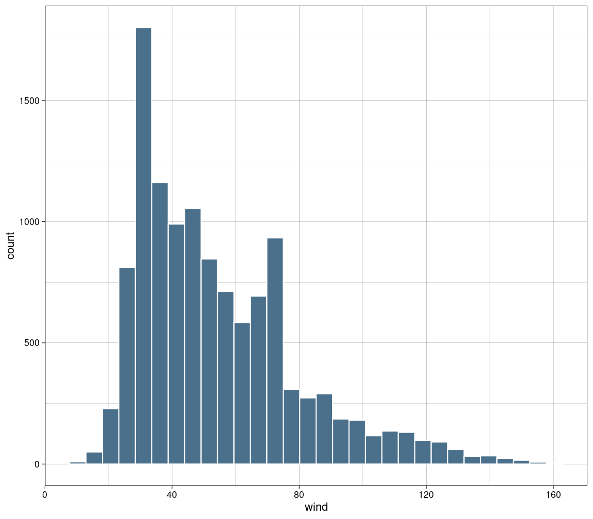
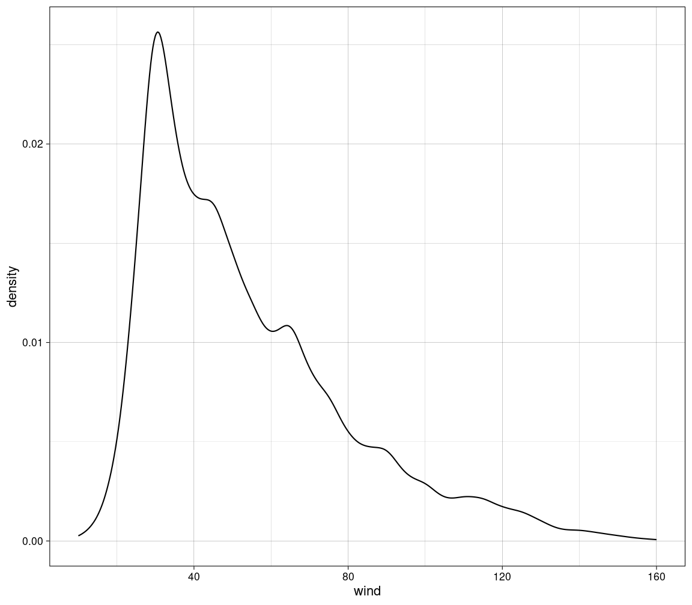

B.Sc. Psychologie Statisik I
- Einleitung
- Wahrscheinlichkeitstheorie
- Datenmanagement
- Häufigkeitstabelle
- Split-Apply-Combine
- Stratifizierung
- Zentrale Tendenz
- Dispersion
- Standardisierung
- Korrelation
- Modellbildung
Einleitung
TODO
Wahrscheinlichkeitstheorie
Axiome der Wahrscheinlichkeit
Nicht-Negativät
Eine Wahrscheinlichkeit $Pr$ eines Ereignisses $E$ ist nie negativ.
$$Pr(E) \ge 0$$
Normalisierung
Die Summe der Wahrscheinlichkeiten $Pr$ aller Ereignisse $E_{i}$ in der Menge $S$ der möglichen Ereignisse ist 1.
$$E_{i} \in S, Pr(S) = 1$$
$$\sum_{i=1}^{n} Pr(E_{i}) = 1$$
Additivität
Die Wahrscheinlichkeit $Pr$ von wechselseitig ausschließlichen ($\cup$) Ereignissen $E_{i}$ entspricht ihrer Summe.
$$Pr(E_{1} \cup E_{2} \cup \dots) = Pr(E_{1}) + Pr(E_{2}) + \dots$$
Verkettung von Wahrscheinlichkeiten
Wahrscheinlichkeiten von Eriegnissen, die gemeinsam auftreten ($\cap$) werden multiupliziert, um die Gesamtwahrscheinlichkeit zu ermitteln.
$$Pr(E_{1} \cap E_{2} \cap \dots) = Pr(E_{1}) \cdot Pr(E_{2}) \cdot \dots$$
Datenmanagement
Querformat/Langformat
Daten in Querformat: mehre messungen des gleichen Merkmals in jeweils eigener Spalte
wide <- tibble(
code = c(1,2,3,4,5),
measurement.1 = rnorm(n = 5, mean = 100, sd = 10),
measurement.2 = rnorm(n = 5, mean = 100, sd = 10),
measurement.3 = rnorm(n = 5, mean = 100, sd = 10)
)
wide
Umwandlung in Langformat: Jede Messung in einer eigenen Zeile
wide %>%
pivot_longer(
cols = starts_with("measurement."),
names_prefix = "measurement.",
names_to = "measurement"
) -> long
long
Winsorisierung
- Werte außerhalb eines gewählten Intervalls werden abgeschnitten und durch auf die jeweilige nächste Intervallgrenze gesetzt
- verändert Mittelwert, Varianz und damit auch Standard-Abweichung
- verändert nicht den Median (sofern dieser nicht mit abgeschnitten wurde)
c(0, 1,2,3,4,5,6,7,8,9) %>% ifelse(. > 6, yes = 6, no = .)
## [1] 0 1 2 3 4 5 6 6 6 6
Häufigkeitstabelle
- absolute Häufigkeit
- kumulierte absolute Häufigkeit
- relative Häufigkeit
- kumulierte relative Häufigkeit
- meistens nach einem Merkmal sortiert
Beispiel: Häufigkeiten von Stürmen nach Jahr
data.short %>%
group_by(year) %>%
summarize(absolute = n()) %>%
ungroup() %>%
arrange(year) %>%
mutate(
absolute.cumulative = cumsum(absolute),
relative = absolute / sum(absolute),
relative.cumulative = cumsum(relative)
)
Split-Apply-Combine
- Split: Daten nach einem Merkmal gruppieren
- Apply: Aggregation ausführen (zb Summen, Mittelwerte, Minima/Maxima)
- Combine: Gruppierung aufheben
data.short %>%
group_by(name) %>%
summarize(wind.top = max(wind)) %>%
ungroup() %>%
arrange(-wind.top) %>%
top_n(10)
## Selecting by wind.top
Stratifizierung
Daten mit kontinuierlichen Merkmalen oder sehr vielen diskreten Ausprägungen werden in Strata (Gruppen) zusammengefasst, zB. um dann aggregierte Werte (Mittelwerte, Min/Max, etc.) in jeder Gruppe zu berechnen.
Beispiel: höchste Windgeschwindigkeit nach Jahrzehnt
data.long %>%
mutate(
decade = cut(
year,
breaks = seq(1970, 2030, 10),
labels = paste0(seq(1970, 2020, 10), "s"),
include.lowest = TRUE,
right = FALSE
)
) %>%
group_by(decade) %>% summarize(top.wind = max(wind))
Zentrale Tendenz
Mittelwert/Durchschnitt
- Summe aller einzelnen Werte, geteilt durch die Anzahl der Werte.
- mindestens intervallskaliert
- anfällig für Extremwerte
- übliches Symbol für Mittelwert einer Population: $\mu$
- übliches Symbol für Mittelwert einer Stichprobe: $\overline{x}$
$$\overline{x} = \frac{1}{n}\cdot\sum_{i=1}^{n} n_{i}$$
mean(data.long$pressure)
## [1] 991.9805
Modus
- Wert mit der größten absoluten Häufigkeit
- alle Skalenniveaus
data.long %>% group_by(month) %>% summarize(n = n()) %>% arrange(-n) %>% top_n(1)
## Selecting by n
Median
- Wert, der wenn alle Werte sortiert sind, in der Mitte steht. Bei gerader Anzahl stehen zwei Werte in der Mitte. Dann wird aus diesen der Mittelwert gebildet.
- midnestens ordinalskaliert
Ungerade Anzahl:
$$1, 2, 2, 4, \color{red}{5}, 5, 7, 8, 9$$
Gerade Anzahl:
$$1, 2, 2, 3, \color{red}{3}, \color{red}{5}, 5, 7, 8, 9$$ $$\frac{3+5}{2} = \color{red}{4}$$
median(data.long$pressure)
## [1] 999
Dispersion
Variationsbreite
- Intervall aus Minimum und Maximum
$$\color{red}{1}, 2, 2, 4, 5, 5, 7, 8, \color{red}{9}$$ $$VB = [1,9]$$
range(c(1,2,2,4,5,5,7,8,9))
## [1] 1 9
Quantile
Quantil: Wertebereich, in dem eine bestimmte Menge der Merkmalsträger liegt, $Q_{p} \to p \%$
Terzile: $Q_{33.3}$, $Q_{66.6}$, $Q_{100}$
Quartile: $Q_{25}$, $Q_{50}$, $Q_{75}$, $Q_{100}$
Quintile: $Q_{20}$, $Q_{40}$, $Q_{60}$, $Q_{80}$, $Q_{100}$
Median entspricht $Q_{50}$, Minimum und Maximum entsprechen $Q_{0}$ bzw. $Q_{100}$
Berechnung
Position des Quantils: $Q_{p} \to i = \frac{n}{p}$
Wenn $i$ ganze Zahl ist, dann ist $Q_{p} = \frac{x_{i} + x_{i+1}}{2}$ (Mittelwert aus Position $x_{i}$ und $x_{i + 1}$)
Wenn $i$ keine ganze Zahl ist, dann wird $i$ aufgerundet ($\lceil i\rceil$) und $Q_{p} = x_{\lceil i\rceil}$, der Wert an der jeweils nächst-höheren Stelle.
quantile(data.long$pressure, probs = seq(1/5, 5/5, 1/5)) #quintile
## 20% 40% 60% 80% 100%
## 979 994 1002 1007 1022
Interquartilsabstand (IQR)
Differenz zwischen erstem und drittem Quartil:
$$IQR = Q_{75} - Q_{25}$$
IQR(data.long$pressure)
## [1] 21
Varianz
- mittlere quadrierte Abweichung vom Mittelwert
- durch Quadierung werden die Abweichungen alle positiv, d.h. Richtung der Abweichung spielt für Varianz keine Rolle
- bezieht sich auf Gesamtpopulation (siehe Stichprobenvarianz)
- mindestens intervallskaliert
$$\sigma^2 = \frac{1}{n} \cdot \sum_{i=1}^{n} (x_{i} - \overline{x})^2$$
Stichprobenvarianz
- bezieht sich auf Stichproben aus einer Population
- enthält eine Korrektur ($n - 1$) gegenüber der allgemeinen Varianz
$$s^2 = \frac{1}{n - 1} \cdot \sum_{i=1}^{n} (x_{i} - \overline{x})^2$$ Je größer $n$, umso mehr nähert sich die Stichprobenvarianz der allgemeinen Varianz an:
$$\lim_{n \to \infty} \frac{1}{n-1} = \frac{1}{n}$$
R berechnet mit var standardmäßig die Stichproben-Varianz:
var(data.long$pressure)
## [1] 382.1348
Standardabweichung
- positive Quadratwurzel aus der Varianz
- mindestens intervallskaliert
- bezieht sich auf gesamte Population
$$\sigma = \sqrt{\sigma^2}$$
Bei normalverteilten Merkmalen:
- 68.2% zwischen $\overline{x}\pm 1\sigma$
- 95.5% zwischen $\overline{x}\pm 2\sigma$
- 99.5% zwischen $\overline{x}\pm 3\sigma$
Stichproben-Standardabweichung
- positive Quadratwurzel aus der Stichproben-Varianz
- gleiche Korrektur wie bei Stichproben-Varianz
- bezieht sich auf Stichproben
$$s = \sqrt{s^2}$$
R berechnet mit sd standardmäßig die Stichproben-Standardabweichung:
sd(data.long$pressure)
## [1] 19.54827
Variationskoeffizient
- Stichproben-Standardabweichung relativ zum Mittelwert
- verhältnisskaliert
$$CV = \frac{s}{\overline{x}}$$
sd(data.long$pressure) / mean(data.long$pressure)
## [1] 0.0197063
Histogramm
- gibt schnellen visuellen Eindruck der Verteilung empirischer Daten
data.long %>%
ggplot(aes(x = wind)) +
geom_histogram(bins = 30, color = "white", fill = "skyblue4") +
theme_custom

Kerndichteschätzer
- Schätzung der Wahrscheinlihckeitsdichte einer empirischen Verteilung
data.long %>%
ggplot(aes(x = wind)) +
geom_density() +
theme_custom

Standardisierung
Durch Standardisierung werden Werte miteinander vergleichbar, auch wenn sie z.B. in unterschiedlichen Größenordnungen oder Einheiten vorliegen.
Z-Werte / Z-Standardisierung
- spielen in vielen weiteren Berechnungen eine sehr große Rolle
Alle einzelnen Werte werden auf 0 zentriert und so skaliert, dass sie eine Standardabweichung von 1 haben:
$$z_{i} = \frac{x_{i} - \overline{x}}{s}$$
data.short %>% select(wind) %>%
mutate(wind.z = (wind - mean(wind))/sd(wind))
Prozentränge
- geben an, wieviel Prozent einer Häufigkeitsverteilung den gleichen oder einen niedrigeren Wert in einem Merkmal haben
- mindestens intervallskaliert
- basiert auf Z-Werten
data.short %>% select(wind) %>%
mutate(
wind.z = (wind - mean(wind))/sd(wind),
wind.pr = pnorm(wind.z)
)
Rang-basierte Normalisierung
- reduziert Skalenniveau zu ordinal
- erzeugt normalverteilte Werte
- sehr effektiv gegen Extremwerte, ohne sie komplett zu entfernen
Schritt 1: Werte sortieren
Schritt 2: Ränge zuordnen
Bei gleichen Werten wird ein Rang mehrfach vergeben
Schritt 3: bei geteilten Rängen Mittelwert bilden
Schritt 4: Prozentränge und Z-Werte berechnen
$$y = \frac{r-0.5}{n}$$
Nach der Rang-basierten Normalisierung sind $p$ und $z$ normalverteilt.
Korrelation
TODO
Modellbildung
TODO